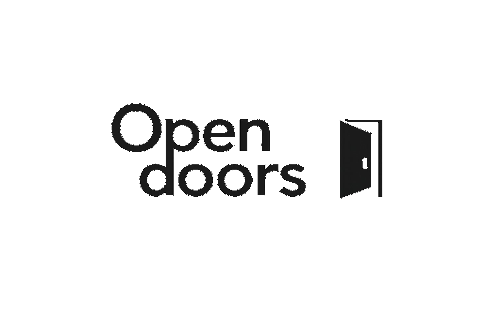

Ir para o conteúdo principal
Voltar

Modo escuro
Como você quer entrar?
Escolha seu perfil para entrar ou criar sua conta.
Sou estudante
Sua carreira começa com uma
boa conexão.
Descubra em quais vagas você tem mais chance, mesmo sem experiência.
Entrar como estudante
Sou empresa
Os melhores talentos
estão aqui.
Publique vagas e receba candidatos já ordenados por compatibilidade.
Entrar como empresa